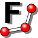

Result of Implicit Function
Result of Implicit Function
ExTools for FreeCAD (Extension tools for FreeCAD) are unofficial plugins for FreeCAD.
FreeCAD is an open source 3D CAD software, so ExTools for FreeCAD are also open source.
ExTools for FreeCAD is licenced under LGPL version 2.1/3. Please check the license agreement.
Download ExToolsForFreeCAD.zip and extract it.
Install - Click "install.js". The files will be copied to "%AppData%\FreeCAD" and the settings will be written to "user.cfg".
Uninstall - Click "uninstall.js" or "%AppData%\FreeCAD\uninstall-ExTools.js".
Install - Run "install.py" on Python 2.7.x. The files will be copied to "$HOME/.FreeCAD" and the settings will be written to "user.cfg".
Uninstall - Run "uninstall.py" or "%AppData%\FreeCAD\uninstall-ExTools.py" on Python 2.7.x.
| Description |
You can draw a polyline according to a mathematical formula with this tool. The formula is defined by Python format math function. For example, "y=1.2x2+10sin(x)" is expressed as "y = 1.2*x**2 + 10 * math.sin(x)". |
| Icon |  |
| Accelerator key | Alt + P |
Enter the sketch editing mode on Part Design workbench or Sketcher workbench.
Click to show Function Polyline Tool dialog.
You can use y=f(x) type formula on Explicit Function tab.
Enter a formula, range of x and number of sampling x. Click to draw the polyline.
Enter the sketch editing mode on Part Design workbench or Sketcher workbench.
Click to show Function Polyline Tool dialog.
You can use (x=f1(t), y=f2(t)) type formula on Implicit Function tab.
Enter a formula, range of t and number of sampling t. Click to draw the polyline.
Result of Implicit Function
| Description | You can confirm surface area, volume and center of mass for selected object with this tool. |
| Icon | |
| Accelerator key | Alt + I |
Select object(s) on model tree or 3D view and click to show Shape Information dialog.
If you selected more than one object, you can switch the shape infomation with the combobox on top of dialog.
 Shape Information result
Shape Information result
If you checked "Decompose compound object" checkbox, each solid in a compound objects (like an array) is treated as a shape.